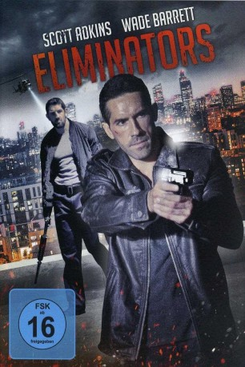

#5243 Eliminators
 
 IMDB-Wertung: 5.5 / 10
IMDB-Wertung: 5.5 / 10  Metascore: 0
Metascore: 0 
Thomas, ehemaliger DEA-Agent, ist zusammen mit seiner Tochter Carly im Rahmen eines Zeugenschutzprogramms in London untergetaucht. Als Diebe irrtümlicherweise in seine Wohnung einbrechen, da sie dort Schmuggelware vermuten, eskaliert die Lage und endet für die Eindringlinge unverhofft in einem Blutbad. Durch diesen unglücklichen Zwischenfall fliegt jedoch Thomas Tarnung auf und die gesamte Londoner Unterwelt erfährt von seiner neuen Identität. Darunter befindet sich auch kein Geringerer als Gangsterbosses Cooper, Thomas Ex-Schwiegervater und Erzfeind, der daraufhin die berüchtigtsten Auftragskiller Europas beauftragt, Thomas zu eliminieren, während er sich selbst auf die Suche nach seiner Enkelin Carly macht. Wütend und kompromisslos setzt der kampferprobte Ex-Agent alles daran, seine hartnäckigen Verfolger - darunter den tödlichen Bishop - im Alleingang abzuschütteln und seine Tochter in Sicherheit zu bringen.
Jahr: 2016
Dauer: 94 Minuten
FSK: 16
Land: England Studio: UFATonspuren: DTS - ,
Untertitel: Deutsch,
Auflösung: 1080p (1920x1080) Größe: 9461 MB
Genre: Action
Regisseur: James Nunn
Drehbuch: Nathan Brookes
Soundtrack: Claude Foisy
Darsteller:
 Scott Adkins als Thomas
Scott Adkins als Thomas- Stu Bennett als Bishop
 Daniel Caltagirone als Ray
Daniel Caltagirone als Ray James Cosmo als Cooper
James Cosmo als Cooper- Ty Glaser als Stacey
- Olivia Mace als Hannah
 Mem Ferda als Giordani
Mem Ferda als Giordani Stephen Marcus als George
Stephen Marcus als George Nick Nevern als Detective Inspector Quinn
Nick Nevern als Detective Inspector Quinn Sean Cronin als Big Boss Man
Sean Cronin als Big Boss Man- David J Biscoe als Police officer
- David William Bryan als Business Man
- Renée Castle als Gail Callister
 Lee Charles als Hoodie
Lee Charles als Hoodie- Marc Edwards als Hoodie
- Franco Flammia als Coopers Security
- Aaron Gassor als Hospital Policeman
- Ellie Goffe als Nurse
 Bruce Johnson als Agent Reid
Bruce Johnson als Agent Reid Akie Kotabe als Analyst
Akie Kotabe als Analyst Euan Macnaughton als Graham
Euan Macnaughton als Graham- Dean Ridge als Anton
 Dan Styles als Hospital Policeman
Dan Styles als Hospital Policeman Jo Wheatley als Hospital patient
Jo Wheatley als Hospital patient Mark Wingett als Police Sergeant
Mark Wingett als Police Sergeant- Lily Ann Stubbs als Carly
- Gurt Bance als Paramedic
- Richard Carter als Giordani's Henchman
- Danny Babington als Security Guard
- Max Dowler als Doctor
- Rudy Valentino Grant als CIA Analyst
- Katie Groark als Party Girl
- Tom Ingham als Council Estate Tenant
- Jean-Paul Jesstiece als Coopers Security
- Frances Millar als Female News Reporter
- Mike Ray als CIA Agent
 Nick Thomas-Webster als Police Inspector
Nick Thomas-Webster als Police Inspector- Tom Ziebell als Police Officer
Datei: X:\2016(A-F)\Eliminators (2016, FSK16, 1920x1080).mkv seit 04.01.2017
Festplatte: HD 2016(A-Z)
 Es gibt insgesamt 147 Filme in der Gruppe '2016(A-F)'
Es gibt insgesamt 147 Filme in der Gruppe '2016(A-F)'